CostTooling — every screen
Thirteen states of the prototype, captured at phone size. Click one to open that screen in the live prototype.
← Open the prototype
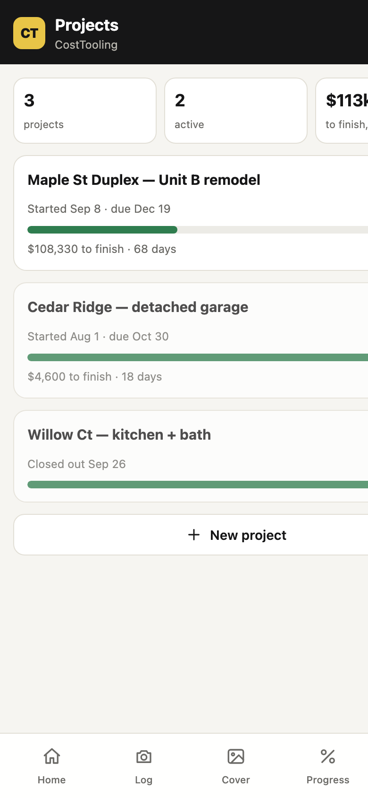
ProjectsEach job with percent complete, cost to finish and days left.
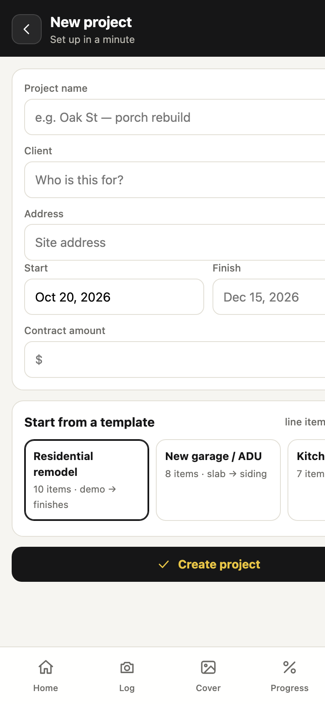
New projectName, client, dates, contract, and a template of line items.
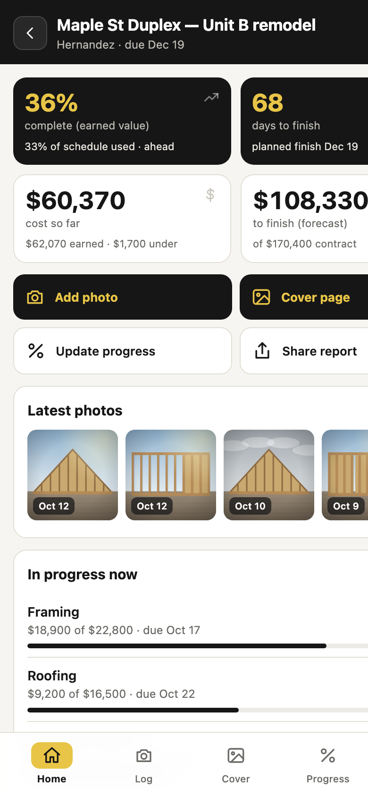
Project homeFour headline numbers, four common actions, latest photos, mini schedule.
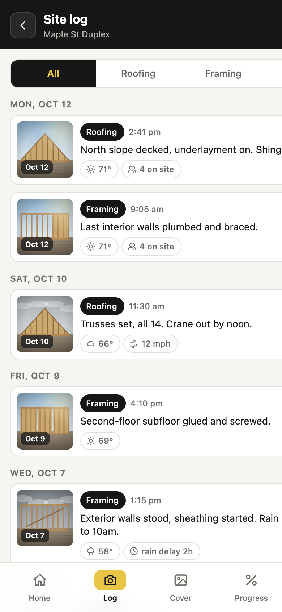
Site logDated photo entries with notes, conditions and line item.
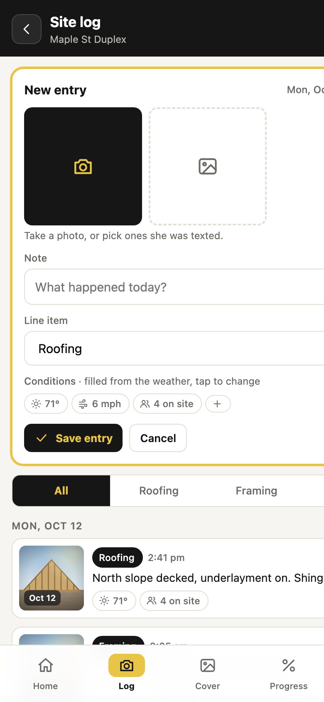
New entryCamera or photos she was texted; conditions pre-filled from the weather.
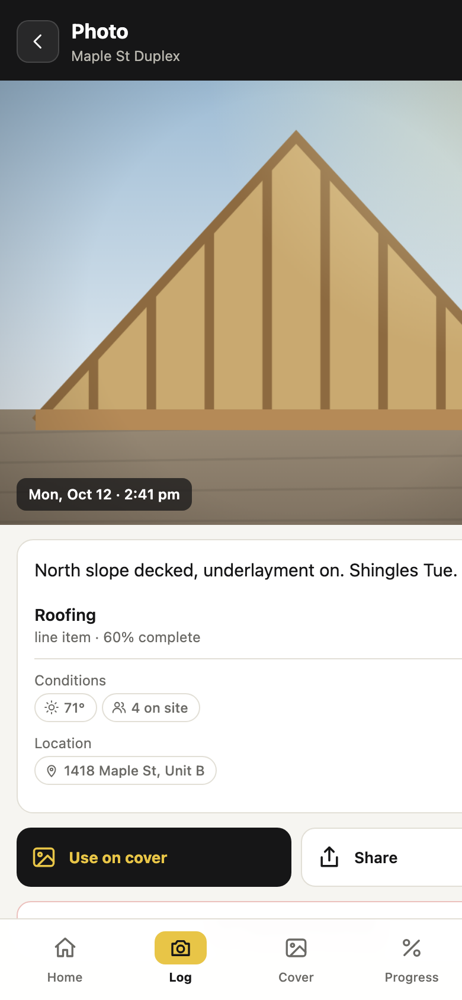
Photo detailFull photo, note, line item, conditions, and "use on cover".
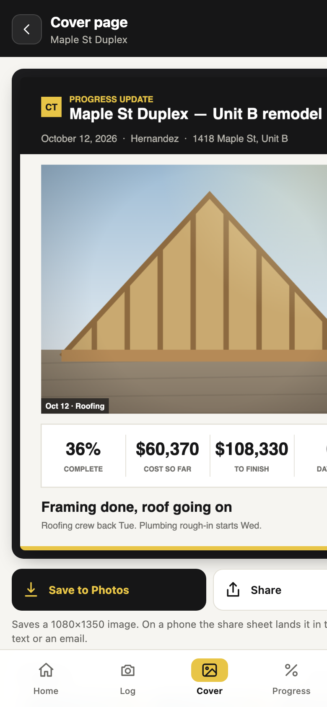
Cover page makerLive preview; numbers from the schedule or typed in. Save to Photos works.
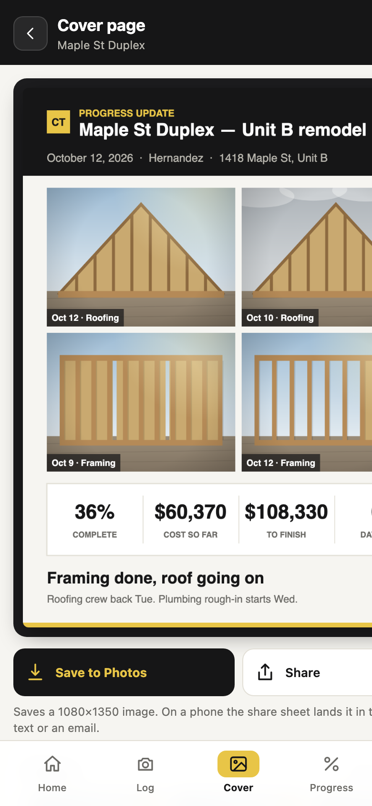
Cover page, 2 × 2Same photos, grid layout.
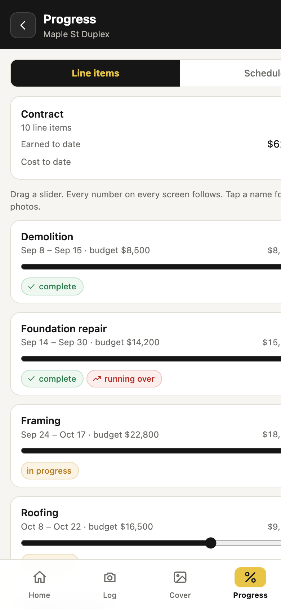
ProgressOne slider per line item; earned value, cost and forecast recalculate.
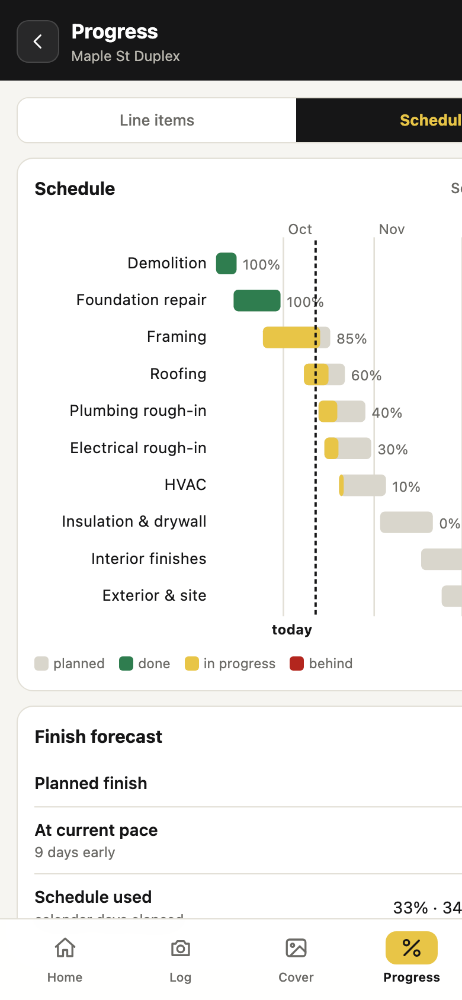
ScheduleGantt from the same line items, today line, finish forecast from pace.
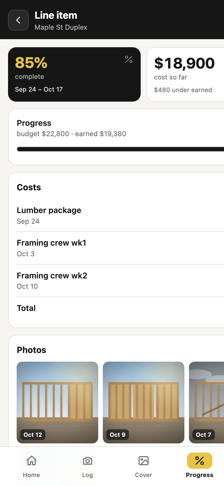
Line itemBudget, progress, costs logged against it, tagged photos.
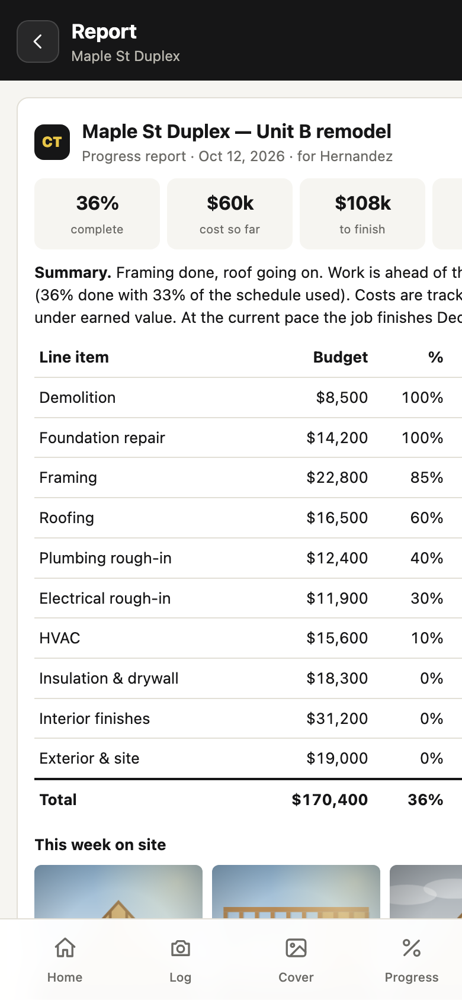
ReportThe one page to hand to an owner, lender or inspector.
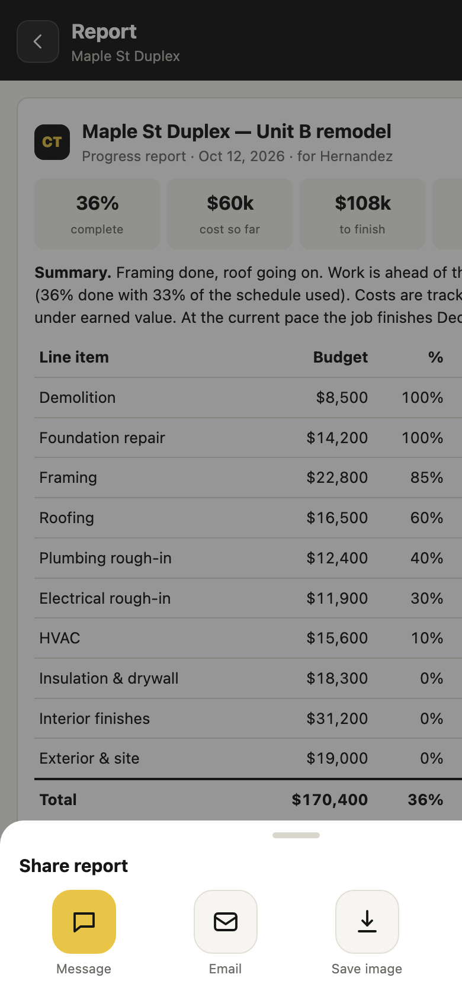
ShareMessage, email, image or PDF.
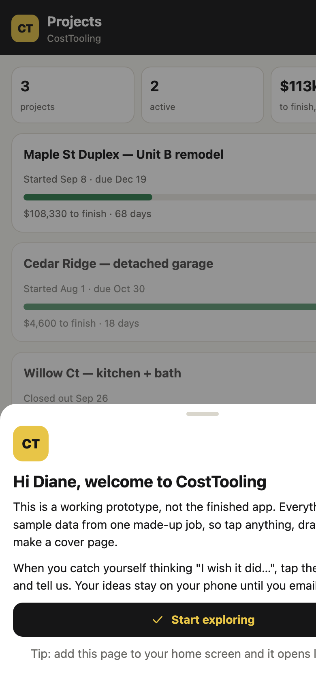
WelcomeFirst-open card explaining it's a prototype.
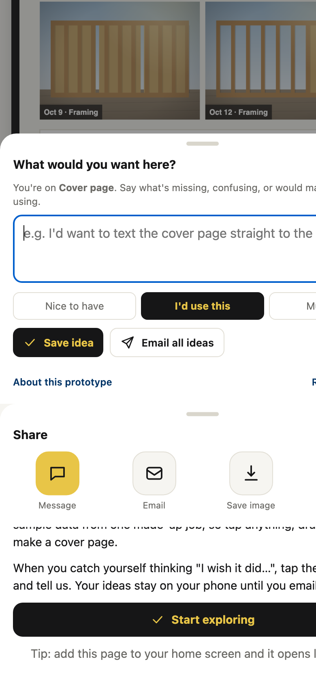
IdeasThe yellow bulb: feature requests tagged with the screen, emailed in one tap.